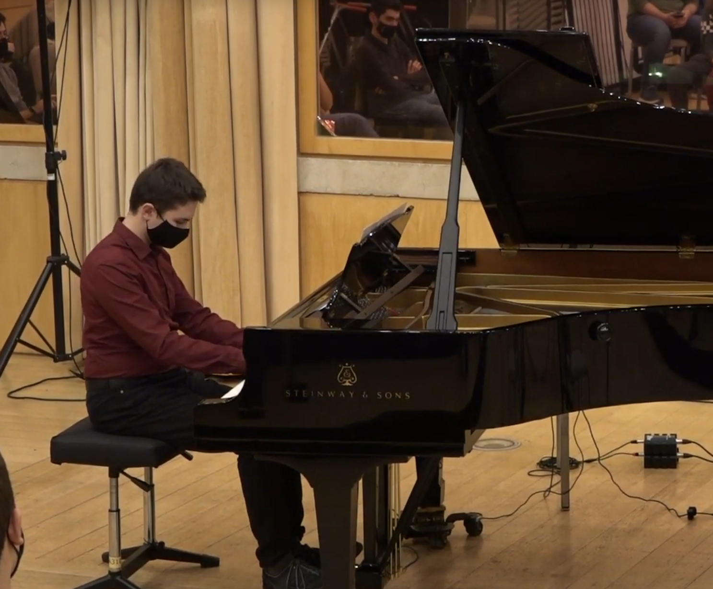
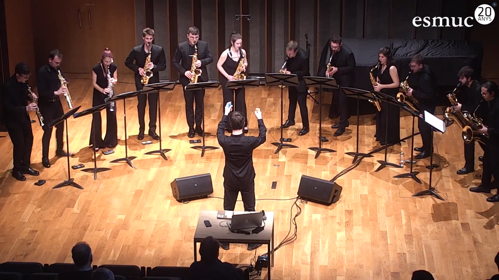
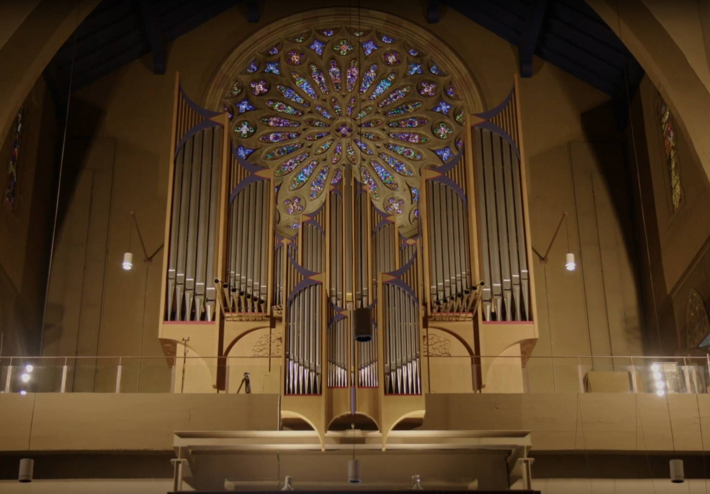

eduvf
composer & programmer
→ go to works → go to capoeira
MACHINE: a real-time battery-powered senseless selfish heart
(drums and live electronics: Joy-Con + SuperCollider)
/aŭ.'to.ma.ta/ (piano solo and electronics)
Líneas de puntos (saxophone ensamble and live electronics)
Perdutto in una Città d'Aria (organ)
